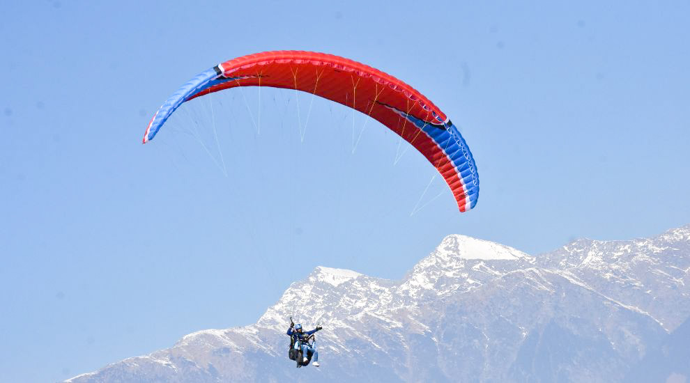
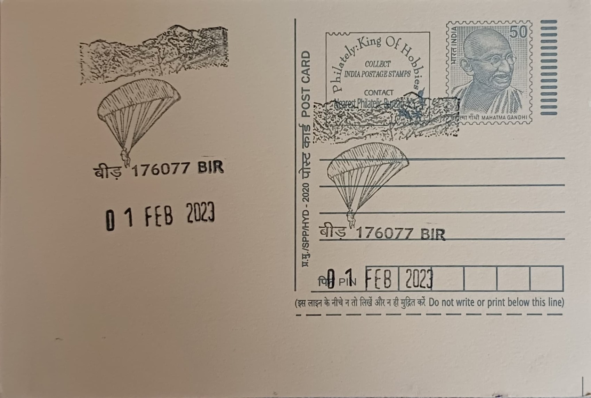

Paragliding arrived in the Kangra valley through the efforts of Navin Sarin, a Palampur resident who left a corporate job in Kolkata in 1975 to develop adventure tourism in the region, introducing hang gliding and angling to what was then a sparsely visited agricultural tract below the Dhauladhar range. Billing hosted its first international hang gliding rally in 1984, an event credited with putting the ridge on the map for free-flight enthusiasts and setting in motion the transformation of the Bir-Billing corridor from a forested grazing area into a recognised aerosports destination over the following decade.
Bir-Billing today ranks among the handful of sites worldwide regularly cited in the top ten for paragliding, valued for the reliable thermals, long glide ratios, and layered mountain-to-valley scenery that the combination of the Billing launch and Bir landing zone affords. The site's standing was formalised when it hosted the Paragliding World Cup in 2015, the first edition of that competition ever held in India, following earlier Pre-World Cup Paragliding Championships organised by the Himachal Pradesh government in 2003, 2006, and 2008 that had built the technical and logistical groundwork for international-standard flying in the valley.
The launch site at Billing sits at an altitude of roughly 2,430 metres, with pilots covering a descent of about 14 kilometres of aerial distance to the landing fields at Bir, passing over pine and deodar forest, terraced tea gardens, and monastery rooftops along the way. The route's combination of altitude gain, consistent cross-valley winds, and varied terrain supports both short tandem joyrides for first-time flyers and cross-country distance flights for licensed pilots, and the corridor now draws an estimated 25,000 or more flyers in a typical season, a volume that has sustained dozens of licensed paragliding operators, tandem pilots, and flying schools based out of Bir.
A defining feature of Bir distinct from the sport itself is the adjoining Tibetan refugee settlement at Chowgan, established in 1966 when the third Neten Chokling Rinpoche led a group of exiles into the area and, with foreign aid, purchased more than 200 acres on which roughly 300 Tibetan families were resettled. The colony grew to house monasteries representing the Nyingma, Karma Kagyu, and Sakya schools of Tibetan Buddhism, including the Neten monastery founded by Chokling Rinpoche, giving the town a dual identity in which saffron-robed monks, prayer flags, and monastic study centres sit within walking distance of paragliding briefing rooms and gear shops.
The Himachal Pradesh government has continued to position Bir-Billing as its flagship aerosports venue, hosting a further Paragliding World Cup edition in November 2024 and working with the state tourism and civil aviation authorities to regulate flying operations, pilot licensing, and seasonal safety protocols following periodic accidents that have prompted tighter oversight of tandem operators. Flying is typically suspended during the monsoon months and concentrated in the spring and autumn windows when thermal conditions are most favourable, and the Bir Billing Paragliding Association now coordinates scheduling among the local operator community that has grown up around the site since the 1980s.
| Date of Introduction | November 26, 2022 |
|---|---|
| Address | Sub Postmaster, |
| Bir SO, | |
| Kangra (dt.), Himachal Pradesh - 176077. |